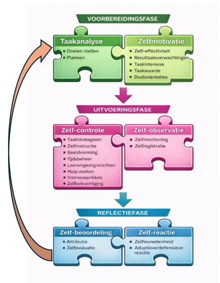
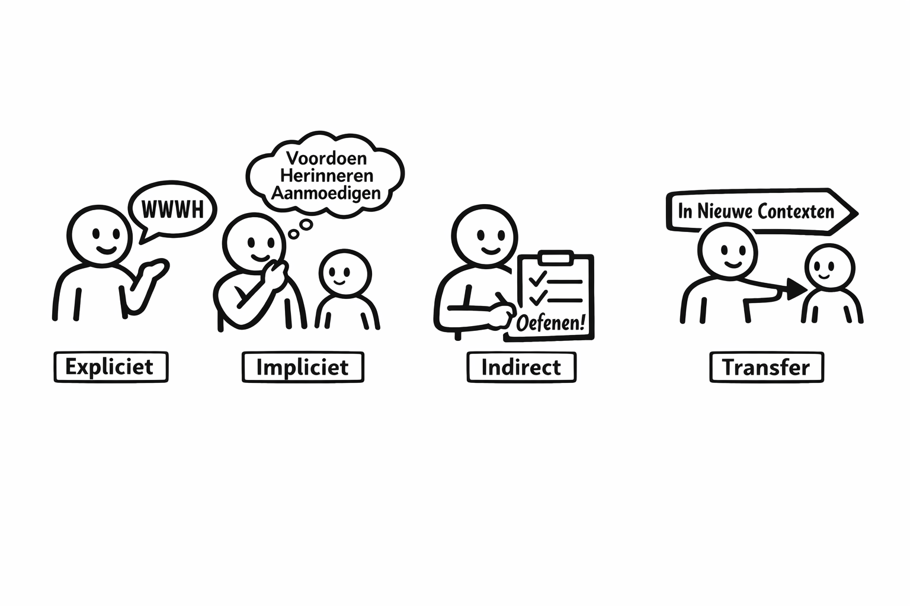
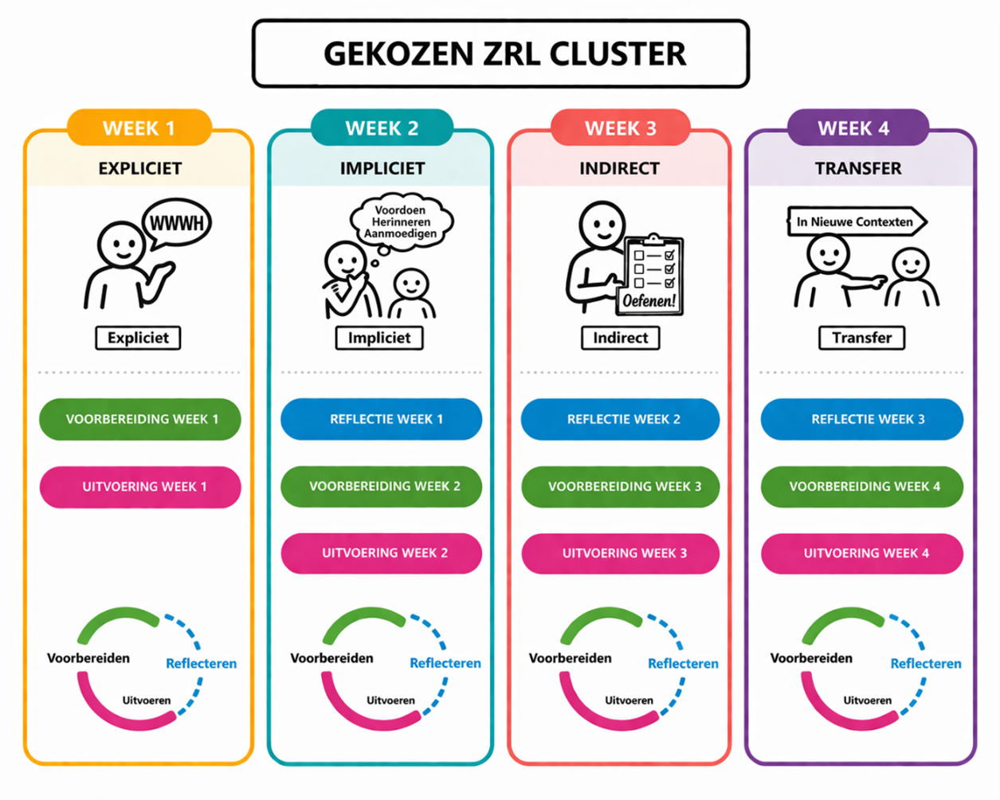
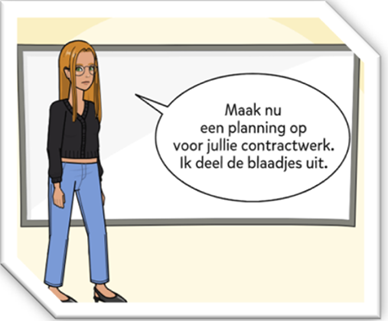
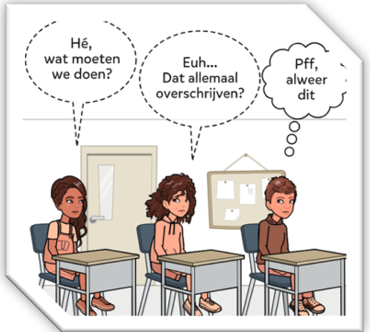
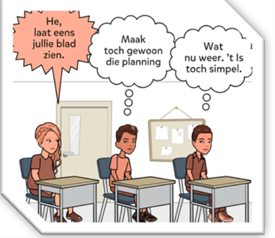
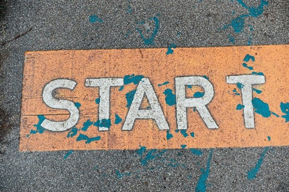

CYCLUS 2 – WEEK 1
Expliciete ondersteuning
⏱ Tijdsindicatie: max. 60 minuten
In deze tweede cyclus kies je een cluster van vaardigheden en ga je die stap voor stap ondersteunen in je klas.
1. Even in de spiegel kijken: Hoe gaat het?

Sta even stil bij volgende vragen:
- Ben ik uitgerust?
- Weet ik nog waarom ik dit leertraject deed?
- Weet ik nog rond welke vaardigheden ik zou werken in deze tweede cyclus?
- Weet ik nog wat ZRL is?
- Ken ik nog een aantal ZRL-vaardigheden?
- Weet ik nog welke de vier ondersteuningsvormen voor ZRL zijn?
Heb je niet alle antwoorden? Geen probleem, we herhalen hier de belangrijkste begrippen zodat je voorkennis terug geactiveerd wordt.
Worstel je met je motivatie? Zeg dan even het volgende tegen jezelf:
- Zelfregulatie is belangrijk voor de slaagkansen van mijn leerlingen (= ZRL-vaardigheid: taakwaarde),
- Ik speel hierbij een belangrijke rol als leraar voor mijn leerlingen (=ZRL-vaardigheid: resultaatsverwachting),
- Ik heb cyclus 1 afgerond (of toch geprobeerd dit zo goed mogelijk te doen) en ben goed bezig (=ZRL-vaardigheid: competentiegevoelens),
- Ik wil deze vaardigheden stap voor stap ondersteunen, met vallen en opstaan (=ZRL-vaardigheid: doeloriëntatie),
- Griet en Nathalie proberen het zo interessant mogelijk te maken (interesseprikkels)
- En tot slot: schakel je buddy maar in om samen aan die GOESTING te bouwen.
Wist-je-dat-je om je taakwaarde te vergroten: Onderzoek toont een positieve impact van ZRL-interventies in alle onderwijsniveaus en vakgebieden, o.a. op motivatie, inzet, sturen van het leerproces, resultaten en algemeen welzijn. De ervaringen van de leerkracht, het vormgeven van opdrachten en ondersteunen van leerlingen speelt daarin een belangrijke rol. Reflecteren over de leeromgeving die je creëert en de ZRL-begeleiding die je biedt is van onschatbare waarde! (leidraad zelfregulerend leren en metacognitie, 2026)
“Zelfregulerend leren kan je leren. En niet alleen dat. Als je het onder de knie hebt, leer je ook meer”. (Patrick Sins, 2023, p.43)
2. Terugblik naar cyclus 1
A. Het helikopterzicht

Zelfregulerend leren omvat :
- 3 fasen (Groen = voorbereidingsfase, Roze = uitvoeringsfase, Blauw = reflectiefase)
- 6 clusters (zie puzzelstukken: taakanalyse, zelfmotivatie, zelf-controle, zelf-observatie, zelf-beoordeling en zelf-reactie)
- 21 vaardigheden (=de onderdelen binnenin de puzzelstukken)
Zelfregulerend leren is holistisch van aard:
- Het gaat zowel om cognitie (bvb. een taakstrategie gebruiken zoals schematiseren), metacognitie (bvb. plannen, zelfmonitoring, zelfevaluatie) als motivatie (bvb. zelfmotivatie, zelfbekrachtiging, zelftevredenheid)
- De vaardigheden hangen vaak samen en beïnvloeden elkaar.
Zelfregulerend leren is een cyclisch proces:
Je vorige leerproces bepaalt hoe je een nieuw leerproces aanvat. De reflectiefase geeft opnieuw voeding aan de voorbereidingsfase en zo steeds verder
Zelfregulerend leren kan je niet zelfregulerend leren MAAR wel via deze vier ondersteuningsvormen, in co-regulatie. Gedurende cyclus 2 zoomen we hierop in.

“Achter een gebrekkige motivatie zit vaak een gebrek aan ZRL-vaardigheden of mislukte leerprocessen”. (Jeltsen Peeters, podcast learning without a roof)
B. Begrippen toepassen: Een voorbeeld
We zijn even een vlieg in de les van Tom en Mara, die na de paasvakantie in co-teaching staan. Kan jij een aantal zelfregulerende vaardigheden en ondersteuningsvormen herkennen in volgende klassituatie?
Tom en Mara geven de leerlingen een groepsopdracht. Ze moeten een poster maken waarop de oorzaken, gevolgen en oplossingen van klimaatverandering duidelijk staan uitgelegd. Op het instructieblaadje staan de criteria waaraan de poster moet voldoen.
Mara legt de leerlingen uit dat ze best eerst een plan van aanpak maken, waarom dat belangrijk is, zeker bij groepswerk,en hoe ze dat kunnen doen.
De leerlingen gaan aan de slag: ze werken een plan van aanpak uit en voeren uit. Mara en Tom gaan na 15 minuten bij elk groepje langs om te horen hoe ver ze staan en wat er nog moet gebeuren.
Het groepje van Noor en Elias vliegt erin:
- ze zoeken informatie op over oorzaken van klimaatverandering
- ze vinden veel informatie
- ze springen van de ene website naar de andere
- Noor neemt het voortouw
- Elias kijkt eerst mee, maar haakt daarna af
- hij praat wat met zijn buur en begint te tekenen
Na een tijdje herinnert Tom de klas nog eens aan de criteria van de opdracht. Hij geeft aan dat ze best af en toe eens checken of ze nog op de goede weg zijn en kunnen afvinken wat ze al realiseerden.
Klik hier voor de oplossing
Antwoord: De criteria waaraan de poster moet voldoen maakt de doelen van Tom en Mara een stuk helderder. Mara biedt expliciete ondersteuning rond plannen. Tom geeft impliciete ondersteuning rond zelfmonitoring door te herinneren aan de criteria bovenaan het instructieblad. Noor en Elias lijken niet echt een duidelijke planning, noch taakstrategie te hebben. Ze zoeken van alles op maar hebben geen idee hoe ze van de informatie naar een poster gaan. Elias verliest zijn interesse in de taak en misschien ook wel zijn competentiegevoelens aangezien Noor hem niet echt een deel laat opnemen en het ook niet vooruit gaat. Elias raakt daardoor afgeleid. De omgeving of het samenwerken met Noor op deze manier zet Elias niet in een lerende houding.
Wist-je-dat-je rond uitgewerkte voorbeelden: Uitgewerkte voorbeeldposters hadden de klas meer inzicht kunnen geven in de verwachtingen. Een klassikale bespreking van diverse voorbeelden helpt om de evaluatiecriteria te verduidelijken, zodat feedback later beter aankomt. Voorbeelden eerst van goed naar minder goed laten ordenen zonder de criteria, daarna met de criteria om deze tot slot te bespreken is een goede werkwijze (Leerpunt, Leidraad effectieve feedback, 2025)
C. Blijven oefenen
Het begrippenkader van zelfregulerend leren is niet min. Zoals we weten is distributed retrieval practice (op verschillende momenten in de tijd herhalen) een effectieve leerstrategie. Om hierop in te spelen kan je volgende posters in je lerarenkamer ophangen.
Je vindt hierbij
- Een poster met de 21 ZRL vaardigheden Klik hier
- Een poster met de uitleg van de 21 ZRL vaardigheden. Klik hier
- Een poster met blanco velden om voorbeelden op te noteren. Klik hier
Ideaal om af en toe eens terug te kijken naar die vele begrippen, en om het gesprek met collega’s aan te gaan.
Inspanningen op het vlak van ZRL hebben immers een groter effect als er een gedragen schoolvisie en beleid is, en die begint… in de leraarskamer!
3. Vooruitkijken: opzet cyclus 2
In de tweede cyclus doorlopen we niet meer alle 21 ZRL-vaardigheden.
Alle 21 vaardigheden tegelijkertijd bij je leerlingen ondersteunen zou immers voor cognitieve overload zorgen bij jezelf én je leerlingen. We kiezen er een aantal uit, onder één of twee clusters (= puzzelstukken), waarvan we de mogelijke ondersteuning in de diepte bekijken (= 4 ondersteuningsvormen).
Je kan uit volgende vier opties kiezen. Denk hierbij ook terug aan wat je op de vragenlijst in februari – voor aanvang van het traject – invulde, en wat we in het gesprek vorige week bespraken. Waar wilde je graag mee aan de slag bij je leerlingen? Onder welk van volgende vier opties past dit?
- taakanalyse & zelfmotivatie,
- zelf-controle,
- zelf-observatie
- zelf-beoordeling & zelf-reactie.

We focussen ons op hoe je die gekozen vaardigheden op verschillende manieren kan ondersteunen: expliciet, impliciet, indirect en transfer
Gekozen? Hoe gaan we verder aan de slag?
Elke week staat een andere ondersteuningsvorm centraal. Je start in week 1 met expliciete directe ondersteuning, … om te eindigen in week vier met transfer.
Concreet ga je elke week als volgt te werk:
- Je bekijkt hoe je de gekozen cluster aan vaardigheden kan ondersteunen.
- Je kiest iets uit en probeert dit uit in je klas. Je gaat dus experimenteren!
- Je gebruikt je leerdagboek om je experiment in te plannen en voor te bereiden (voorbereidingsfase), uit te voeren (uitvoeringsfase) en te evalueren (reflectiefase).
Na vier weken hebben we deze vaardigheden dus heel breed, gebaseerd op de vier ondersteuningsvormen aangepakt, wat transfer mogelijk maakt.


Dit klinkt mogelijks wat abstract. Nathalie en Griet leggen het je daarom ook nog eens graag uit in een homevideo.
Klik hier voor hun input!4. Aan de slag: Expliciete ondersteuning?
A. Korte teaser



Op een maandagmorgen, in een klas ergens in Vlaanderen.
Wat gebeurt hier?
Sommige leerlingen uit deze klas lijken nog extra uitleg nodig te hebben over:
- WAT een planning precies is
- WAAROM een planning helpt
- WANNEER je er best een maakt
- HOE je dat concreet aanpakt
Voor andere leerlingen is dat wel zo klaar als een klontje. Ook op het vlak van ZRL zijn er immers heel wat verschillen tussen leerlingen. Leerlingen die nog minder ervaring hebben met ZRL hebben veel baat bij expliciete ondersteuning en modellen door de leerkracht, terwijl leerlingen die dit al iets meer beheersen meer hebben aan het stimuleren van het gebruik van hun ZRL-vaardigheden en gerichte feedback (Leerpunt, 2026).
De range van ondersteuningsvormen is dus nodig om al onze leerlingen een stapje vooruit te helpen. Deze week focussen we ons op de expliciete ondersteuning.
Wist-je-datje? Vaak worden doelen die wij voor ogen hebben meegegeven met leerlingen, maar zijn die voor hen te vaag, te onduidelijk, weinig motiverend. Leerdoelen vertalen naar een prikkelende vraag of situatie (zoals hierboven) maakt het enerzijds tastbaar en prikkelt de interesse (Speltincx & Van Hoof, 2021)
Wist-je-datje? Expliciete directe ondersteuning is niet volledig hetzelfde als expliciete directe instructie (EDI), maar ook wij struikelen nog vaak over deze begrippen. EDI is een systematische en gestructureerde lesmethode die zowel gaat om het stapsgewijs uitleggen van de leerstof, als voorbeelden en oefenmogelijkheden geven en is dus ruimer dan wat wij hier expliciete directe ondersteuning voor ZRL noemen.
B. Expliciete ondersteuning: Wat & waarom?

Deze week willen we zicht krijgen op:
- wat expliciete directe ondersteuning is
- waarom expliciete directe ondersteuning belangrijk is
- hoe je ermee aan de slag kan samen met jouw leerlingen in de klas
Ook vrij expliciet dus.
Expliciete ondersteuning: Wat & waarom?
Vaak passen we in het onderwijs werkvormen toe die vooral veel zelfstandigheid vragen van onze leerlingen, terwijl ze daar nog niet steeds aan toe zijn. Zelfregulerende vaardigheden ontwikkel je niet door zelfstandig aan de slag te moeten gaan. Je leert niet zwemmen door in het water gegooid te worden, maar ook niet door aan de rand van het zwembad te blijven staan.
Met andere woorden:
- leerlingen moeten ZRL-vaardigheden kunnen oefenen
- MAAR die vaardigheden moeten wel EERST aangeleerd worden
Expliciete ondersteuning biedt leerlingen structuur en houvast bij het aanleren van vaardigheden.
Expliciete directe ondersteuning zagen we in cyclus 1 als de WWWH, expliciteren van het WAT, WAAROM, WANNEER en HOE van een ZRL-vaardigheid.
De recente leidraad van Leerpunt rond ZRL en metacognitie (2026) geeft het volgende aan:
- Directe ondersteuning (waaronder expliciete ondersteuning valt) legt de basis voor ZRL
- Indirecte ondersteuning helpt om de vaardigheden te verankeren en te automatiseren
Beginnen bij het begin dus, bij de expliciete ondersteuning!

C. Planning: Wanneer & Hoe?
We gaan samen aan de slag met expliciete ondersteuning rond ons gekozen cluster(s) aan ZRL-vaardigheden.
Weet je nog welke keuze jij maakte?
Griet en Nathalie maakten per cluster een inspiratiebundel om met jouw klas heel expliciet aan de slag te gaan rond één of meerdere ZRL vaardigheden.
Het gaat hierbij om werkvormen om expliciet tijd en ruimte te maken voor het spreken over de ZRL-vaardigheden.
WANT…..
- Praten met elkaar helpt leerlingen groeien (in ZRL). Door leerlingen met elkaar én met de leraar in gesprek te laten gaan, ontdekken ze beter hoe ze leren en hoe ze zichzelf kunnen sturen. In die gesprekken krijgen ze ook taal aangereikt om hun eigen leerproces te begrijpen en bij te sturen.
- Een veilig en positief klimaat is de basis. Wanneer fouten maken mag en er open over gesproken kan worden, versterkt dit de motivatie en het zelfregulerend leren. Daarnaast gaat het ook vaak niet om goed en fout maar wel om zoeken naar wat voor jou werkt of zou kunnen werken.
- Leren is proberen, aanpassen en opnieuw proberen. Dit expliciet benoemen zorgt ervoor dat leerlingen bewuster kunnen kiezen wat voor hen en de taak die ze moeten uitvoeren werkt. Een reeks oefeningen maken vraagt andere strategieën dan een toets studeren of een presentatie voorbereiden. Het ene kind moet zichzelf meer motiveren om gestart te raken voor bvb. wiskunde dan het andere.
Overtuigd van het nut? Klaar om aan de slag te gaan?
Klik hier voor onze home video met instructies en meer informatie.5. Aan de slag: inspiratiebundel & leerdagboek
Neem de inspiratiegids door die aansluit bij jouw gekozen cluster en volg de instructies die daar omschreven staan. Klik straks door voor de juiste inspiratiegids. Kies uit deze gids één werkvorm die je deze week wil uitproberen.
Vul het leerdagboek in om jouw experiment grondig voor te bereiden en in te plannen. Het leerdagboek werd meegestuurd met de mail maar vind je ook hieronder.
Mail je leerdagboek terug eens het is ingevuld of sla het op in een gedeelde map, en deel de link met Nathalie & Griet
Kies jouw inspiratiegids, klik op de knop en ga aan de slag !
- Inspiratiegids taakanalyse en zelfmotivatie (groene cluster, voorbereidingsfase) Klik hier
- Inspiratiegids zelf-controle (roze cluster, uitvoeringsfase) Klik hier
- Inspiratiegids zelf-observatie (roze cluster, uitvoeringsfase) Klik hier
- Inspiratiegids zelf-beoordeling en zelf-reactie (blauwe cluster, reflectiefase) Klik hier

Ga naar het leerdagboek (hieronder of via de bijlage bij de mail)
Klik hier6. Vooruitblik
Deze week ga je met je klas aan de slag rond expliciete ondersteuning. Volgende week, in week 2, bekijken we hoe dit verlopen is (reflectie week 1). We gaan dan verder in op de tweede ondersteuningsvorm, namelijk impliciete ondersteuning, om die opnieuw voor te bereiden en uit te voeren!
Tot dan!